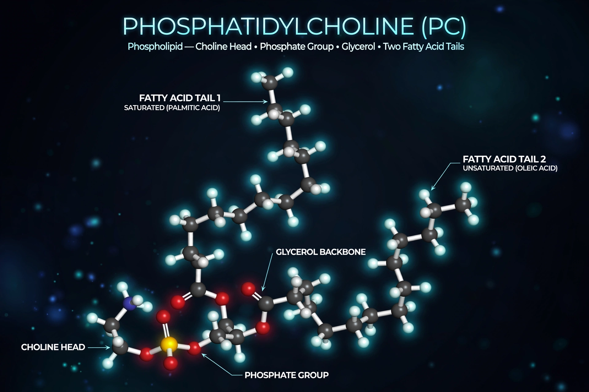

Phosphatidylcholines (PC) are a class of phospholipids that incorporate choline as a headgroup. They are a major component of biological membranes and can be obtained from egg yolk or soybeans, from which they are mechanically or chemically extracted; the commercial mixture is known as lecithin. Phosphatidylcholine is also a major component of pulmonary surfactant.

| Type | Phospholipid (glycerophospholipid) |
|---|---|
| Headgroup | Choline |
| Sources | Egg yolk, soybeans, cell membranes |
| Example | Dipalmitoylphosphatidylcholine (DPPC) |
A phosphatidylcholine molecule consists of a glycerol backbone esterified to two fatty acids and to a phosphate group bearing choline. The zwitterionic, hydrophilic head and hydrophobic tails make PC amphipathic: in water it self-assembles into bilayers, micelles, and liposomes. PC is the most abundant phospholipid of animal cell membranes and the outer leaflet of the plasma membrane, and it serves as a reservoir for signaling molecules such as arachidonic acid and as the source of the neurotransmitter precursor choline.
Cells synthesize PC mainly by the CDP-choline (Kennedy) pathway, in which choline is phosphorylated, activated with CTP to form CDP-choline, and transferred onto diacylglycerol. In the liver, an alternative pathway methylates phosphatidylethanolamine three times using S-adenosylmethionine, catalyzed by the enzyme PEMT.
Dietary PC from lecithin is used as a food emulsifier and supplement. In the lungs, dipalmitoylphosphatidylcholine is the principal surface-tension-lowering component of surfactant, whose deficiency causes respiratory distress syndrome in premature infants. Enzymes called phospholipases cleave PC at specific bonds, generating lysophosphatidylcholine, phosphatidic acid, and free fatty acids involved in signaling.
See also: Phospholipid · Lecithin · Choline · Pulmonary surfactant